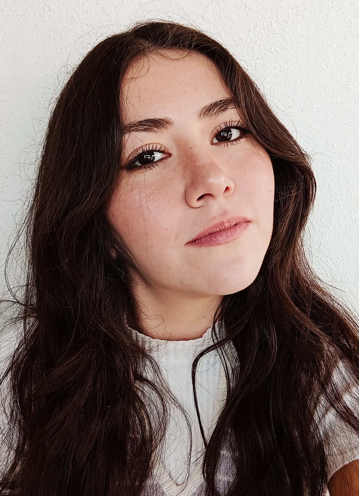

María Isabela Ceceña Ruiz del Sol
Sobre mi carrera
 ¡Hola! me llamo María Isabela, pero me gusta que me llamen Bela, Soy una chica de 26 años, estudiante de la carrera de Diseño Gráfico en la Benemérita Universidad Autónoma de Puebla. Soy apasionada del Branding, la ilustración y el Diseño Gráfico en general. Me considero con una mente creativa e inovadora y estoy dispuesta a realizar nuevos proyectos para aprender cada día más.
He trabajado en varios proyectos cercanos para ganar experiencia y me ha ido bastante bien, en especial con la creación de marcas que es lo que más disfruto hacer y así como he logrado esos trabajos espero desempeñarme mucho mejor en mi área ya que siempre sentí que el diseño y la creatividad serían mi forma de vida.
Sobre mi
Entre las cosas que más disfruto y me gustan están los gatitos ya que actualmente tengo nueve, todos ellos adoptados y una perrita llamada chispa, me gusta ver series en mi tiempo libre en especial friends que es mi favorita y no me canso de repetirla una y otra vez, me gusta beber café y los tés de todos sabores e igual que un gato me gusta salir a tomar un poco de sol con todos mis gatos. Actualmente estoy generando un gusto por las plantas y ya he traido varias a casa y espero que me vaya bien con ellas.
Mis trabajos
Aquí dejo mi portafolio con trabajos que he desarrollado tanto individualmente como para mi carrera. He trabajado desde diferentes técnicas de ilustración, cartel, editorial, animación, identidad global, fotografía, modelado 3d entre otras.
¡Espero les guste!
Portafolio